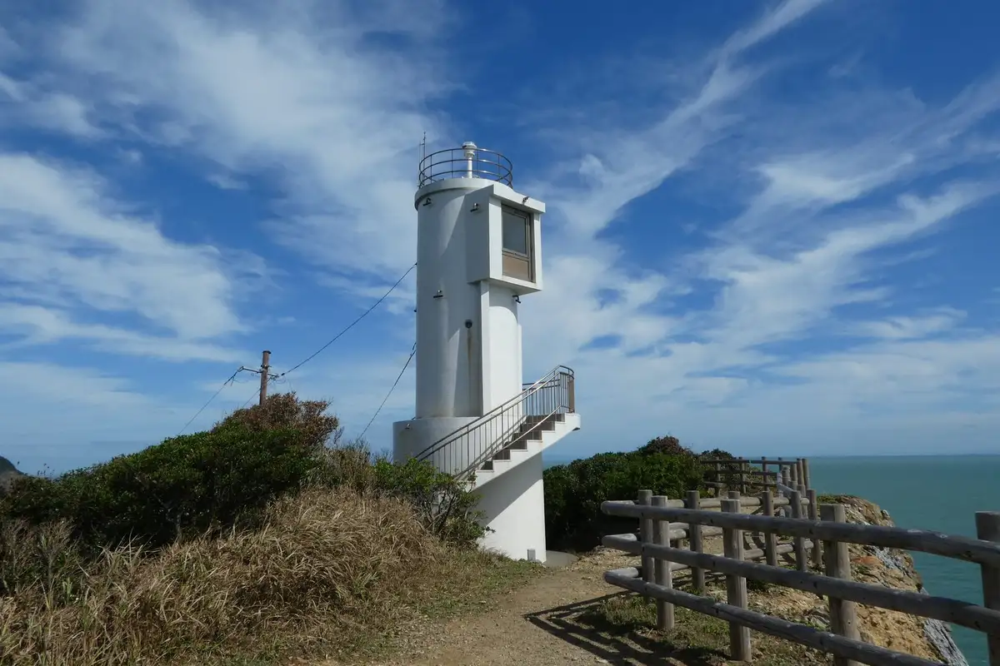
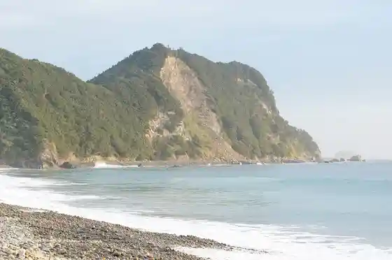
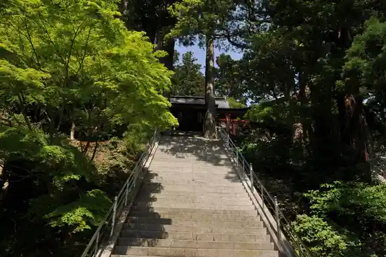
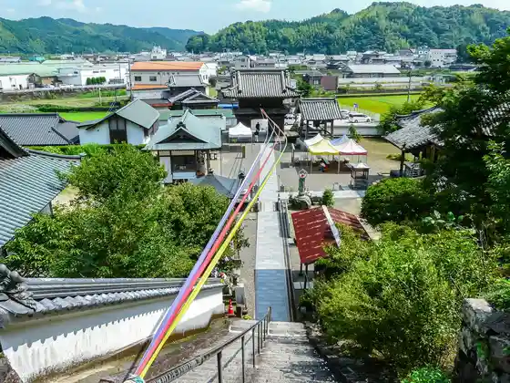
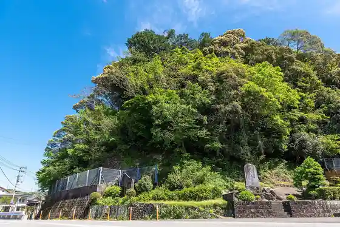

Anan City
Anan City · Tokushima
Anan City
Highlighted on the Tokushima map.

Stay
Supa Hotel Anan City Tomioka
Supa Hotel Anan City City Hall Mae Kin'en Kan
Sumairu Hotel Anan City
Hotel Rutoin Anan City
Beisaido Hotel Ryugu
Anan Suteshon Hotel
Anan City Daiichi Hotel
Hotel Ishimatsu
Roiyaru Garden Hotel
Bijinesu In Ichi Raku
Anan City Plaza In
Tsubaki Shizen Sono
Anan Suteshon Hotel ANNEX
Onsen
Supa Hotel Anan City Tomioka Hikari Machi Baths
Supa Hotel Anan City City Hall Mae Kin'en Kan Ta Ryu Baths
Sumairu Hotel Anan City Public Bath
Hotel Rutoin Anan City Public Bath
Supa Sento Yamato no Sato Rotemburo
Bijinesu In Ichi Raku Viewpoint Public Bath
Anan City Plaza In Public Bath
Tsubaki Shizen Sono Viewpoint Furo
Experience
Ta Ryu Tera Ropuei
Sights
Gamo Ta Misaki
Akome Coast

Ta Ryu Tera

Byodo Tera

Okayamajo Shi

Nakagawa
More places (local open data)
O Matsu Taiken Gen
Tsu Mineyama, Tsu Mine Shrine
Kotohira Shrine
Anan City Seibu Park (Himawari Land)
Anan City J Pawa & Yonden Wa Nda Land
Ushi Shi Joshi Park
Tachibana Kannon
Uma O Falls
Awa Kubo Folk Museum
Sekimon Park
Kita no Waki Beach
Mei Taniume Hayashi Sono
I Shima no Sasayuri
Kamoda Misaki Onsen Hoyo Shisetsu
Hikari no Machi Suteshon Plaza
JA Aguri Anan Sutajiamu
Roadside Station Kubo no Sato Nakagawa